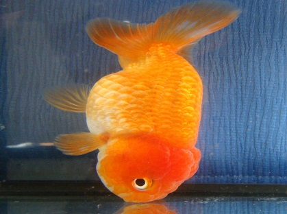
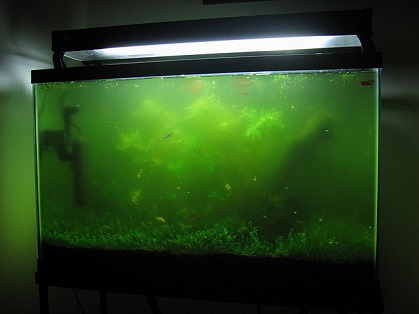
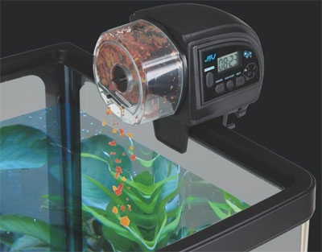
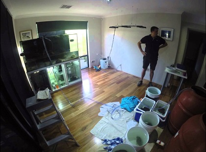
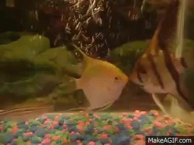
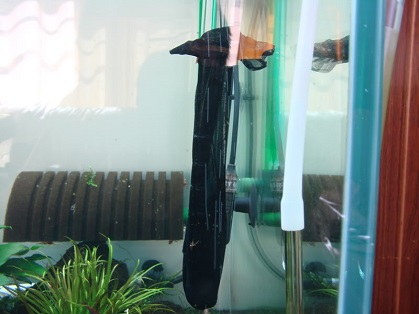

-
Help! My fish is struggling to swim but still alive!
Your fish mostly likely has swim bladder disease.
You should stop feeding it for a day or two so its digestive tract can be cleansed.
On day three, feed it cooked peas. Over another day or two, it should recover.

-
Help! My fish tank's water is so green and I can't see anything!
Foggy green water is caused by a neglect of cleaning.
You should drain the fish tank until it has around 30% water left.
Then, clean it out the best you can and add clean water.

-
Help! I'm going on vacation soon? What do I do about my fish?
If your fish are in good shape, they can go a weekend without food.
Usually, they can also go a week without food, but it's not recommended.
There are automatic feeders out there, but getting someone to feed them is easier.

-
Help! I want to move my fish tank! What should I do about my fish?
Moving tanks are a hassle but it is possible.
You should move all your fish into a small tank for the time being.
They'll be fine for the time being, but don't leave them in there for more than a day!

-
Help! One of my fish is bullying another! What do I do?
A lot of fish are very territorial.
You should add more places for the other fish to hide in this case.
If the problem persists, isolate the bully for a while.

-
Help! My little fish are missing.
I can't find them anywhere!
If you have other big fish in the tank, then they probably became food!
Small fish sometimes get sucked into the filter, too.
You can always wrap some old pantyhose around the filter to prevent this.
